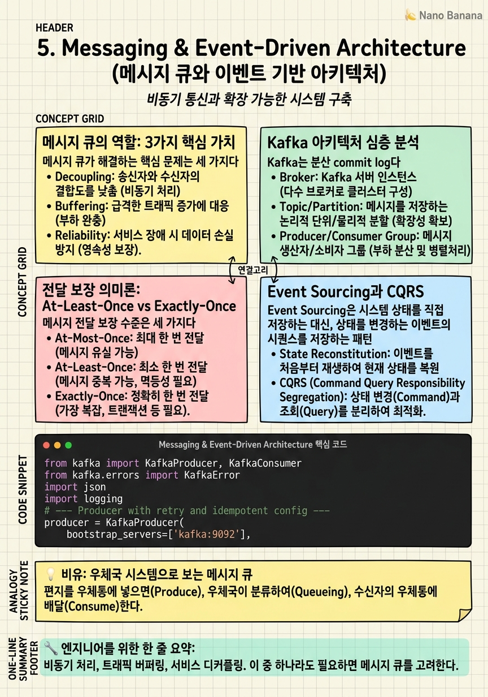

Messaging & Event-Driven Architecture

🎯 학습 목표
- 메시지 큐가 해결하는 문제(비동기, 버퍼링, 디커플링)를 설명할 수 있다
- Kafka의 Topic, Partition, Offset, Consumer Group을 이해하고 설명할 수 있다
- At-Least-Once와 Exactly-Once 전달 의미를 알고 각각의 구현 방법을 안다
- Event Sourcing이 무엇이고 왜 쓰는지, 단점이 무엇인지 설명할 수 있다
- Dead Letter Queue를 언제 왜 써야 하는지 안다
현대 대규모 시스템의 핵심 패턴 중 하나는 비동기 메시징이다. 서비스들이 직접 HTTP로 통신하는 대신, 메시지 큐를 통해 간접적으로 통신한다. 이를 통해 서비스 간의 결합도를 낮추고(Decoupling), 트래픽 스파이크를 흡수(Buffering)하며, 독립적인 스케일링을 가능하게 한다.
메시지 큐를 쓰지 않으면 어떻게 될까? 사용자가 Netflix에서 업로드한 동영상을 처리할 때, 트랜스코딩 서비스가 잠깐 느려지면 업로드 API 서버까지 blocking된다. 하지만 Kafka를 사이에 두면, 업로드 API는 이벤트를 Kafka에 쓰고 즉시 응답한다. 트랜스코딩 서비스는 자신의 속도로 처리한다.
Apache Kafka는 LinkedIn에서 2011년 만들어진 이후 현대 데이터 인프라의 중심이 되었다. Uber는 초당 수백만 건의 이벤트를 Kafka로 처리하고, Airbnb, Netflix, Twitter도 핵심 인프라로 사용한다.
핵심 내용
메시지 큐의 역할: 3가지 핵심 가치
메시지 큐가 해결하는 핵심 문제는 세 가지다.
1. 비동기 처리 (Async Processing)
이메일 발송, 이미지 리사이징, 동영상 트랜스코딩처럼 시간이 걸리는 작업을 동기적으로 처리하면 사용자가 기다려야 한다. 메시지 큐에 넣고 즉시 응답하면, 백그라운드 워커가 처리한다. 사용자 경험 향상 + 서버 자원 효율화.
2. 트래픽 버퍼링 (Traffic Buffering)
이벤트 트래픽: 평소 1,000 TPS → 이벤트 기간 10,000 TPS. 메시지 큐 없이 DB에 직접 쓰면 DB가 죽는다. 큐를 버퍼로 쓰면 큐는 10,000 TPS를 받아 저장하고, 소비자는 DB 처리 속도에 맞춰 1,000 TPS로 소비한다.
3. 서비스 디커플링 (Service Decoupling)
주문 서비스 → (직접 호출) → 결제, 재고, 알림, 포인트 서비스. 하나라도 느리거나 다운되면 주문이 실패한다. 주문 서비스가 "OrderPlaced" 이벤트를 메시지 큐에 발행하면, 각 서비스가 독립적으로 구독하여 처리한다. 각 서비스는 서로의 존재를 모른다.
RabbitMQ vs Kafka:
| 항목 | RabbitMQ | Kafka |
|---|---|---|
| 패러다임 | Message Queue (Push) | Distributed Log (Pull) |
| 메시지 보존 | 소비 후 삭제 | 설정 기간 보존 |
| 처리량 | 수만 TPS | 수백만 TPS |
| 재처리 | 어려움 | Consumer Offset으로 쉬움 |
| 사용 사례 | Task queue, RPC | Event streaming, 로그, CDC |
Kafka 아키텍처 심층 분석
Kafka는 분산 commit log다. 데이터는 Topic 안에 저장되고, Topic은 여러 Partition으로 나뉜다.
핵심 개념:
Topic — 메시지의 카테고리. 예: user-clicks, order-events, payment-processed.
Partition — Topic의 분산 단위. 각 Partition은 순서가 보장된 immutable log. Partition이 많을수록 더 많은 Consumer가 병렬로 처리 가능.
Offset — Partition 내 메시지의 순서 번호. Consumer는 자신이 어디까지 읽었는지(offset)를 관리한다. 이 덕분에 재처리(replay)가 가능하다.
Consumer Group — 같은 Topic을 처리하는 Consumer 집합. 하나의 Partition은 Consumer Group 내 하나의 Consumer에게만 할당된다. 따라서 Consumer Group 내 Consumer 수는 Partition 수를 초과해도 의미없다.
Producer → Topic(Partition 1, 2, 3) → Consumer Group A (Consumer 1, 2, 3) + Consumer Group B (Consumer 1, 2)
Consumer Group A는 주문 처리, Consumer Group B는 분석 데이터 수집. 같은 이벤트를 두 목적으로 독립적으로 소비할 수 있다.
메시지 라우팅:
partition = hash(message_key) % num_partitions
같은 user_id를 key로 쓰면 같은 사용자의 이벤트가 항상 같은 Partition에 들어간다 → 사용자 이벤트의 순서 보장.
전달 보장 의미론: At-Least-Once vs Exactly-Once
메시지 전달 보장 수준은 세 가지다.
At-Most-Once — 메시지를 한 번만 전송, 유실 가능. 가장 빠르고 간단. 로그처럼 일부 유실이 괜찮은 경우.
At-Least-Once — 메시지가 반드시 전달됨, 중복 가능. Consumer가 처리 후 offset을 커밋하기 전에 crash하면 같은 메시지를 다시 받는다. 이를 처리하려면 Consumer가 멱등성(Idempotent) 을 가져야 한다.
Exactly-Once — 메시지가 정확히 한 번 처리됨. 이론적으로 가장 이상적이지만 구현이 복잡하고 성능 overhead가 있다. Kafka는 Idempotent Producer + Transactional API로 exactly-once를 지원한다.
멱등성(Idempotency) 구현:
같은 메시지를 여러 번 처리해도 결과가 동일해야 한다.
- DB UPSERT (INSERT ... ON CONFLICT UPDATE) — 같은
event_id로 여러 번 와도 한 번만 처리됨 - 고유 이벤트 ID를 별도 테이블에 기록 후 중복 확인
실제로 대부분의 시스템은 At-Least-Once + Idempotent Consumer로 구현한다. Exactly-Once는 Kafka의 financial transaction 같은 극히 중요한 경우에만 쓴다.
Event Sourcing과 CQRS
Event Sourcing은 시스템 상태를 직접 저장하는 대신, 상태를 변경하는 이벤트의 시퀀스를 저장하는 패턴이다.
전통적 방식: users 테이블에 현재 잔액 저장 → UPDATE로 덮어쓰기 → 과거 이력 없음.
Event Sourcing 방식: events 테이블에 {user_id: 1, type: 'Deposited', amount: 100, timestamp: ...} 저장 → 모든 이벤트 재생(replay)으로 현재 잔액 계산.
장점: - 완전한 감사 로그(Audit Log) — 언제 누가 무엇을 했는지 완전히 재현 가능 - 특정 시점의 상태 재현 (Time Travel) — "3일 전 오후 2시의 잔액은?" 가능 - 이벤트를 새로운 Consumer가 처리하여 새 기능 구현 가능
단점: - 현재 상태 조회 시 이벤트 재생 비용 → Snapshot으로 완화 - 이벤트 스키마 변경이 어려움 - 시스템 복잡도 증가
CQRS (Command Query Responsibility Segregation) 는 Event Sourcing의 단점인 "현재 상태 조회 비용"을 해결한다. Write 모델(이벤트 저장)과 Read 모델(조회 최적화 뷰)을 분리한다. 이벤트가 발행되면 읽기 모델(Read Model)이 이벤트를 소비하여 조회에 최적화된 뷰를 업데이트한다.
Dead Letter Queue와 실패 처리
메시지 처리는 실패할 수 있다. DB가 일시적으로 느리거나, 외부 API가 에러를 반환하거나, 메시지 형식이 잘못됐거나. 이런 실패를 어떻게 처리할까?
Retry with Exponential Backoff
실패 시 즉시 재시도하면 이미 과부하 상태인 시스템에 더 부하를 준다. 지수 백오프로 간격을 늘리며 재시도: - 1회: 1초 후 - 2회: 2초 후 - 3회: 4초 후 - N회: \(2^N\)초 후 (최대 한도 있음)
Dead Letter Queue (DLQ)
최대 재시도 횟수를 초과한 메시지를 별도 큐(DLQ)로 이동. DLQ의 메시지는: - 수동으로 검토 후 재처리 - 알림 발송으로 즉각적인 대응 - 분석하여 버그 수정 후 일괄 재처리
DLQ 없이 실패 메시지를 그냥 버리면, 중요한 데이터가 조용히 사라진다. 결제 실패, 주문 처리 실패를 DLQ에 모아두고 나중에 재처리하는 것이 실제 프로덕션 패턴이다.
Circuit Breaker와의 결합:
Downstream 서비스가 계속 실패하면 Circuit Breaker가 열려서 (open state) 메시지 처리 시도 자체를 일시 중단한다. 서비스 복구 후 Circuit Breaker가 닫히면 DLQ의 메시지를 재처리한다.
💡 비유로 이해하기
메시지 큐는 우체국과 같다. 편지를 쓰는 사람(Producer)은 우체국(Message Queue)에 편지를 맡기고 자신의 일을 계속한다. 받는 사람(Consumer)이 지금 자리에 없어도 편지는 우체국에 보관된다. 받는 사람은 자신이 편리한 시간에 편지를 찾아간다.
Kafka는 특별한 우체국이다. 편지를 배달해도 원본을 보관한다(Retention). 다른 사람(Consumer Group)도 같은 편지를 읽을 수 있다. "2주 전 편지부터 다시 읽어줘"도 가능하다. 일반 우체국(RabbitMQ)은 배달 완료 즉시 파기한다.
Dead Letter Queue는 주소 불명으로 반송된 편지들을 모아두는 별도 보관함이다. 그냥 버리지 않고 모아뒀다가 나중에 직원이 확인하여 재처리한다.
💻 코드 예시
Kafka Producer/Consumer 패턴과 At-Least-Once 보장, 멱등성 처리를 kafka-python 라이브러리로 구현한다. 실제 프로덕션 패턴에 가까운 코드다.
from kafka import KafkaProducer, KafkaConsumer
from kafka.errors import KafkaError
import json
import logging
# --- Producer with retry and idempotent config ---
producer = KafkaProducer(
bootstrap_servers=['kafka:9092'],
value_serializer=lambda v: json.dumps(v).encode('utf-8'),
acks='all', # Wait for all in-sync replicas
retries=3, # Retry on transient errors
enable_idempotence=True, # Exactly-once producer semantics
max_in_flight_requests_per_connection=5
)
def publish_order_event(order_id: str, user_id: str, amount: float):
event = {
"event_id": f"order-{order_id}", # Unique ID for idempotency
"type": "OrderPlaced",
"order_id": order_id,
"user_id": user_id,
"amount": amount,
}
future = producer.send(
topic='order-events',
key=user_id.encode(), # Same user → same partition → ordered
value=event
)
try:
record_metadata = future.get(timeout=10)
logging.info(f"Sent to {record_metadata.topic}:{record_metadata.partition}")
except KafkaError as e:
logging.error(f"Failed to send event: {e}")
raise
# --- Consumer with manual offset commit (At-Least-Once) ---
consumer = KafkaConsumer(
'order-events',
bootstrap_servers=['kafka:9092'],
group_id='payment-service',
enable_auto_commit=False, # Manual commit for reliability
auto_offset_reset='earliest',
value_deserializer=lambda x: json.loads(x.decode('utf-8'))
)
processed_event_ids = set() # Idempotency cache (use Redis in production)
for message in consumer:
event = message.value
event_id = event.get("event_id")
# Idempotency check — skip if already processed
if event_id in processed_event_ids:
consumer.commit() # Still commit to advance offset
continue
try:
# Process the event (e.g., charge payment)
process_payment(event)
processed_event_ids.add(event_id)
consumer.commit() # Only commit AFTER successful processing
except Exception as e:
logging.error(f"Failed to process {event_id}: {e}")
# Do NOT commit — message will be redelivered핵심은 enable_auto_commit=False와 처리 완료 후 수동 커밋이다. 처리 전에 commit하면 실패 시 메시지가 유실된다(At-Most-Once). 처리 후 commit 전에 crash하면 같은 메시지를 다시 받는다(At-Least-Once). 멱등성 체크(processed_event_ids)로 중복을 처리한다. key=user_id.encode()로 같은 사용자의 이벤트가 항상 같은 Partition에 들어가 순서가 보장된다.
🏭 현업에서의 평가
✅ 시니어가 보는 것
- 메시지 큐를 도입하는 시점과 이유를 명확히 설명하는가
- Kafka Partition 수 결정 기준(Consumer 수 고려)을 아는가
- At-Least-Once와 Exactly-Once의 트레이드오프를 설명할 수 있는가
- Consumer lag 모니터링과 스케일링 전략을 아는가
⚠️ 레드 플래그
- 모든 서비스 간 통신에 메시지 큐를 넣으려는 over-engineering
- Partition 수를 고려하지 않는 설계 (Consumer가 Partition보다 많으면 유휴 Consumer 발생)
- 메시지 처리 실패 시나리오를 다루지 않는 설계
- "Kafka를 쓰면 됩니다"만 말하고 왜 Kafka인지 설명 못 함
🎤 예상 인터뷰 질문
- 결제 시스템에서 Kafka를 쓴다면 어떤 Topic과 Consumer Group 구성을 가져가겠어?
- Consumer가 메시지를 두 번 처리하는 상황이 발생했다. 어떻게 해결하겠어?
- Kafka에서 순서가 보장되는 단위는 무엇인가? Partition 설계를 어떻게 해야 하나?
✨ 핵심 요약
큐의 3가지 가치
비동기 처리, 트래픽 버퍼링, 서비스 디커플링. 이 중 하나라도 필요하면 메시지 큐를 고려한다.
Kafka = 분산 로그
Kafka는 메시지를 소비 후에도 보존한다. 재처리, 여러 Consumer Group의 독립적 소비, 시간 여행 조회가 가능하다.
Partition이 병렬성 단위
Kafka의 병렬 처리 단위는 Partition이다. Consumer 수를 늘리려면 Partition 수를 먼저 늘려야 한다.
At-Least-Once + 멱등성
대부분의 시스템은 At-Least-Once + Idempotent Consumer로 구현한다. 처리 완료 후 offset commit이 핵심.
DLQ는 필수
실패한 메시지를 버리지 않는다. DLQ에 모아 알림을 받고 수동 검토 또는 재처리한다.
같은 Key → 같은 Partition
순서가 중요한 이벤트(같은 사용자의 주문 이벤트)는 user_id를 Kafka key로 써서 순서를 보장한다.
Event Sourcing = 이벤트 히스토리
상태가 아닌 이벤트를 저장하면 완전한 감사 로그와 시간 여행 조회가 가능하다. 단, 복잡도가 올라간다.
Consumer Lag을 모니터링
Consumer가 메시지를 소비하는 속도가 Producer보다 느리면 Consumer Lag가 증가한다. 이것이 알람 지표가 된다.